Advanced Calculus for Engineers (NPTEL noc26_ma130) — Weeks 1–12 lecture notes condensed into one story. Instructors: Jitendra Kumar (Modules 01–03), Somesh Kumar (Modules 04–05), IIT Kharagpur. Every theorem keeps full hypotheses; words cut, content kept.
From Flat Graphs to Curved Space: One Calculus Story
Thesis in one line: a flat graph has a horizontal tangent somewhere (Rolle), that tangent fact generalizes to estimates and series (MVT, Taylor) and to limits that refuse to evaluate (L'Hôpital); the same ideas in two variables force us to separate existence from continuity of slopes (partials vs differentiability), to classify hills and passes (maxima/minima), to undo differentiation (ODEs) and to add up infinitely many pieces (improper, Beta/Gamma, double/triple integrals); finally the same derivative becomes an arrow field whose swirl and outflow are measured by curl and divergence and balanced by four great integral theorems (Green, Stokes, Divergence).
A smooth hill that starts and ends at the same height must go flat somewhere. That one picture — Rolle — gives every estimate (MVT), every series (Taylor), and every 0/0 limit (L'Hôpital) in this chapter.
1.1 Rolle's theorem
Theorem (Rolle). If \(f\) is (a) continuous on \([a,b]\), (b) differentiable on \((a,b)\), (c) \(f(a)=f(b)\), then there exists \(c \in (a,b)\) with \(f'(c)=0\).
Intuition. Same height at both ends plus no corners or breaks forces a flat tangent inside — either the function is constant (derivative zero everywhere) or it attains a max/min inside, where Fermat's stationarity gives \(f'(c)=0\). Derivation (source proof skeleton). By extreme value theorem \(f\) attains \(M=\max f\), \(m=\min f\) on \([a,b]\). Case I: \(M=m\) gives constant \(f\), so \(f'\equiv 0\). Case II: \(M\ne m\); since \(f(a)=f(b)\), at least one extremum occurs at interior \(c\), say \(f(c)=M\). Then for \(\Delta x \lt 0\), \(\frac{f(c+\Delta x)-f(c)}{\Delta x}\ge 0\), and for \(\Delta x \gt 0\) the quotient is \(\le 0\); letting \(\Delta x\to 0\) gives \(f'(c)\ge 0\) and \(f'(c)\le 0\), hence \(f'(c)=0\).
Worked-example skeleton. (i) Applicability check: \(f(x)=x^3+1\) on \([0,1]\), \(3-x\) on \((1,2]\) — continuous at \(x=1\) (both give 2) but left derivative \(3\ne -1\): corner, so Rolle does not apply. (ii) Root counting: \(x^{11}+7x+\cdots=0\) type — between any two roots of \(f\) lies a root of \(f'\); if \(f'\) has no/limited zeros, so does \(f\). (iii) Iterated Rolle: if \(g\) vanishes at 5 points, \(g'\) vanishes at \(\ge 4\) points between them (source L1 Example-3 with \(g=2ff'\) gives \(\ge 4\) zeros of \(g'\)).
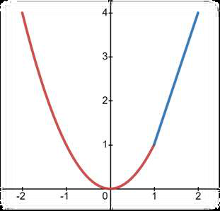
From notes W1 (L1): piecewise \(f=x^2\) on \([-2,1]\), \(3x-2\) on \((1,2]\) — hypotheses of Rolle fail here, yet \(f'(0)=0\). Hypotheses are sufficient, not necessary.
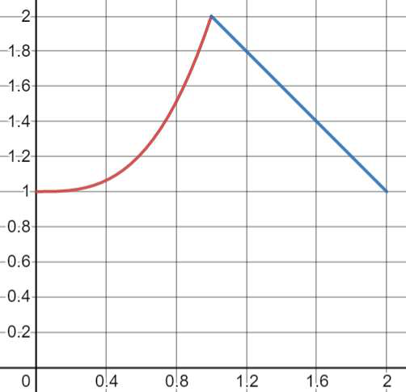
From notes W1 (L1 Example-1): \(f=x^3+1\) on \([0,1]\), \(3-x\) on \((1,2]\) — continuous at the joint \(x=1\) (value 2) but cornered (slopes \(3\) vs \(-1\)): Rolle does not apply on \([0,2]\).
Exam trap: hypotheses sufficient, NOT necessary — conclusion \(f'(c)=0\) may still hold when a hypothesis fails. Always test all three before citing Rolle; a corner or a jump kills it.
1.2 Lagrange and Cauchy mean value theorems
Theorem (Lagrange MVT). If \(f\) is continuous on \([a,b]\) and differentiable on \((a,b)\), then \(\exists\, c\in(a,b)\): \(f'(c)=\frac{f(b)-f(a)}{b-a}\). Theorem (Cauchy/generalized MVT). If \(f,g\) are continuous on \([a,b]\), differentiable on \((a,b)\), and \(g'(x)\ne 0\) on \((a,b)\) (so \(g(b)\ne g(a)\)), then \(\exists\, c\in(a,b)\): \(\frac{f(b)-f(a)}{g(b)-g(a)}=\frac{f'(c)}{g'(c)}\). Lagrange is the case \(g(x)=x\).
Intuition. Tilt your head until the chord looks horizontal: subtracting the secant line \(\phi(x)=f(x)-\frac{f(b)-f(a)}{b-a}x\) reduces Lagrange to Rolle. Cauchy does the same for the parametric curve \((g(t),f(t))\). Derivation. Apply Rolle to \(\phi\) (Lagrange) or to \(h(x)=f(x)-\frac{f(b)-f(a)}{g(b)-g(a)}g(x)\) (Cauchy); \(h(a)=h(b)\) gives \(h'(c)=0\), rearrange.
\[\frac{f(b)-f(a)}{b-a}=f'(c),\qquad \frac{f(b)-f(a)}{g(b)-g(a)}=\frac{f'(c)}{g'(c)}\quad\text{for some }c\in(a,b).\]
Worked-example skeleton. (i) Estimation: bound \(f(1)\) from \(f(0)\) via \(|f(1)-f(0)|=|f'(c)|\le \max|f'|\). (ii) Prove inequalities (e.g.\ \(\sin x \lt x\)): apply MVT on \([0,x]\). (iii) Cauchy form with \(g(x)=x^2\) etc. for ratio limits — this is the engine of L'Hôpital.
Exam trap: Cauchy needs \(g'\ne 0\) on \((a,b)\) — without it the ratio is meaningless. MVT gives existence of \(c\), never its value; do not "solve" for \(c\) unless asked.
1.3 Taylor's formula (single variable)
Theorem (Taylor with Lagrange remainder). If \(f\) is \((n+1)\)-times differentiable on an interval containing \(x_0,x\), then \(f(x)=P_n(x)+R_n(x)\) with \(P_n(x)=f(x_0)+f'(x_0)(x-x_0)+\cdots+\frac{f^{(n)}(x_0)}{n!}(x-x_0)^n\) and \(R_n(x)=\frac{f^{(n+1)}(\xi)}{(n+1)!}(x-x_0)^{n+1}\) for some \(\xi\) between \(x_0\) and \(x\). If \(R_n(x)\to 0\) as \(n\to\infty\), the Taylor series converges to \(f\). About \(x_0=0\) this is Maclaurin.
Intuition. Match value, slope, curvature, … at one point; the remainder is the first unmatched derivative sampled somewhere in between. More matched derivatives means a longer faithful interval. Derivation. Apply Cauchy MVT repeatedly to \(\frac{f(x)-P_n(x)}{(x-x_0)^{n+1}}\); each step drops one order until \(f^{(n+1)}(\xi)\) survives.
Worked-example skeleton. Taylor polynomials of \(e^x\) at 0: \(P_0=1\), \(P_1=1+x\), \(P_2=1+x+x^2/2\), \(P_3\) adds \(x^3/6\), \(P_4\) adds \(x^4/24\), \(P_5\) adds \(x^5/120\) — each hugs \(e^x\) further out.
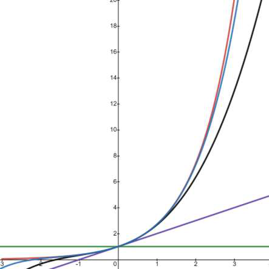
From notes W1 (L3 Example-1): Taylor polynomials \(P_0,\dots,P_5\) of \(e^x\) about \(0\) closing in on \(e^x\) — higher order wins further from the center.
Exam trap: series \(\ne\) function until you check \(R_n\to 0\). Maclaurin is just Taylor at 0 — state the center explicitly.
1.4 Indeterminate forms and L'Hôpital
Theorem (L'Hôpital). For \(\frac{0}{0}\) or \(\frac{\infty}{\infty}\) as \(x\to a\) (or \(\pm\infty\)): if \(f,g\) differentiable near \(a\) (except possibly at \(a\)), \(g'\ne 0\) nearby, and \(\lim f'/g'\) exists (or is \(\pm\infty\)), then \(\lim f/g=\lim f'/g'\). May be applied repeatedly (\(f''/g''\), …).
Intuition. Near the limit point, functions look like their tangents; the ratio of functions tends to the ratio of slopes. Cauchy MVT is the proof. Reduction recipes (all reduce to \(0/0\) or \(\infty/\infty\)). \(0\cdot\infty\): write \(f\cdot g=f/(1/g)\). \(\infty-\infty\): common denominator or factor the dominant term. \(0^0,\ \infty^0,\ 1^\infty\): set \(y=f^g\), take logs: \(\ln y=g\ln f\) (a \(0\cdot\infty\) form), then exponentiate: \(\lim y=e^{\lim\ln y}\).
Worked-example skeleton. \(\lim_{x\to 0^+}x^x\): \(y=x^x\), \(\ln y=x\ln x=\frac{\ln x}{1/x}\to\frac{1/x}{-1/x^2}=0\), so limit \(=e^0=1\). \(\lim_{x\to 0}(1/x^2-1/\sin^2x)\): combine to \(\frac{\sin^2x-x^2}{x^2\sin^2x}\) (\(\infty-\infty\to 0/0\)), differentiate twice. \(\lim_{x\to\infty}(x+(1/\ln(1-1/x)))\) type: rewrite as single fraction first.
Exam trap: check the form FIRST — L'Hôpital on a non-indeterminate ratio is wrong. \(|x|\)-type corners and oscillation (\(\sin(1/x)\)) defeat it; simplify or squeeze instead. Always re-check the form after each differentiation.
Single-variable estimates done. Two variables break the comforting idea that "slopes exist" means "surface is smooth" — next.
2. Limits, continuity, partial derivatives
In 2D there are infinitely many roads to a point. If any two roads disagree, the limit does not exist — but agreement on every road you tried proves nothing.
2.1 Functions of two variables and \(\epsilon\)–\(\delta\) limit
Definition (limit). \(\lim_{(x,y)\to(x_0,y_0)}f(x,y)=L\) if \(\forall\,\epsilon \gt 0\ \exists\,\delta \gt 0\) such that \(0 \lt \sqrt{(x-x_0)^2+(y-y_0)^2} \lt \delta \Rightarrow |f(x,y)-L| \lt \epsilon\). Domain of \(z=f(x,y)\) = set of \((x,y)\) where the rule gives a real \(z\); range = attained \(z\)-values.
Intuition. The \(\delta\)-disc must map entirely inside the \(\epsilon\)-strip — one bad path (a curve along which \(f\) tends elsewhere) kills the limit. Derivation (non-existence template). Approach along \(y=mx\) (or \(y=x^2\)): if the resulting single-variable limit depends on \(m\), no limit exists. Standard killers: \(\frac{xy}{x^2+y^2}\to\frac{m}{1+m^2}\) (path-dependent), \(\frac{x^2y}{x^4+y^2}\to 0\) on lines but \(\to 1/2\) on \(y=x^2\).
\[\text{Path-dependent value}\ \Longrightarrow\ \text{limit DNE. Agreement on lines proves nothing.}\]
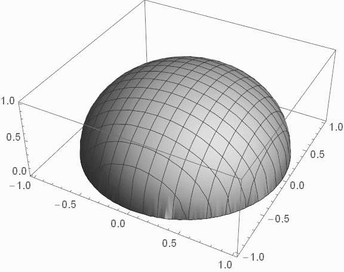
From notes W2 (L6): graph of \(z=\sqrt{1-x^2-y^2}\) — hemisphere of radius 1; domain is the disc \(x^2+y^2\le 1\), range is \(0\le z\le 1\). Read domain before any limit.
Exam trap: polar coordinates \(x=r\cos\theta\), \(y=r\sin\theta\) with \(r\to 0\) is valid ONLY if the bound is uniform in \(\theta\) (e.g.\ \(|f|\le r\cdot(\text{bounded})\)). A \(\theta\)-dependent leftover (like \(\cos\theta\sin\theta\) without an \(r\) factor) invalidates the argument.
2.2 Evaluation and continuity
Definition (continuity). \(f\) is continuous at \((x_0,y_0)\) if \(\lim_{(x,y)\to(x_0,y_0)}f(x,y)=f(x_0,y_0)\) — limit exists, function defined, and they agree. Polynomials, rationals (denominator \(\ne 0\)), and composites of continuous functions are continuous on their domains.
Intuition. No jumps, no blow-ups, no missing points — the surface can be drawn without lifting the pen near the point. Worked-example skeleton. Removable vs essential: \(\frac{\sin(x^2+y^2)}{x^2+y^2}\to 1\) (extend continuously by defining \(f(0,0)=1\)); \(\frac{1}{x^2+y^2}\) unbounded (essential); piecewise definitions need two-sided path checks at the joint.
Exam trap: "continuous along every line" \(\ne\) continuous (the \(x^2y/(x^4+y^2)\) parabola trap). Test parabolas \(y=kx^2\) too.
2.3 First-order partial derivatives
Definition. \(f_x(x_0,y_0)=\lim_{\Delta x\to 0}\frac{f(x_0+\Delta x,y_0)-f(x_0,y_0)}{\Delta x}=\frac{d}{dx}f(x,y_0)|_{x_0}\); \(f_y\) analogously freezing \(x\). Geometrically: slope of the tangent to the surface slice \(y=y_0\) (resp.\ \(x=x_0\)).
Intuition. Hold one variable hostage, differentiate as usual — a partial is an ordinary derivative of a slice. Derivation. Freeze \(y=y_0\); the curve \(z=f(x,y_0)\) has tangent slope \(d/dx\,f(x,y_0)=\tan\theta\). Existence of \(f_x,f_y\) says nothing about other directions — continuity can still fail (see §3).
From notes W2 (L9): geometric meaning of \(\partial f/\partial x\) at \((x_0,y_0)\) — slope \(\tan\theta\) of the tangent to the surface along the slice \(y=y_0\).
Exam trap: partials existing does NOT imply continuity (§3 counterexamples). At \((0,0)\) always use the definition quotient — formula differentiation may be invalid there.
2.4 Higher-order partials and Clairaut
Theorem (Clairaut / equality of mixed partials). If \(f_{xy}\) and \(f_{yx}\) exist and are continuous at \((x_0,y_0)\) (it suffices that one mixed partial exists near and is continuous at the point), then \(f_{xy}(x_0,y_0)=f_{yx}(x_0,y_0)\). Notation: \(f_{xx}=\frac{\partial^2f}{\partial x^2}\), \(f_{xy}=(f_x)_y\).
Intuition. Mixed difference quotient \(\Delta_{xy}f\) over a rectangle is path-independent when the surface is smooth enough; continuity lets the two iterated limits agree. Derivation. Apply MVT twice to \(\Phi=f(x+h,y+k)-f(x+h,y)-f(x,y+k)+f(x,y)\): once in \(x\), once in \(y\) gives \(hk\,f_{xy}(\xi,\eta)\); reverse the order gives \(hk\,f_{yx}\); continuity forces equality as \(h,k\to 0\).
\[f_{xy}=f_{yx}\ \text{when the mixed partials are continuous.}\]
Worked-example skeleton. The course's pathological example: a function whose \(f_{xy}(0,0)\ne f_{yx}(0,0)\) — possible only because the mixed partials are discontinuous at the origin. Compute both by definition at \((0,0)\), by formulas elsewhere.
Exam trap: equality needs continuity of a mixed partial — without it, compute both orders separately. Never swap blindly in exam counterexamples.
Slopes can exist while the surface stays jagged. Differentiability is the stronger claim — next.
3. Differentiability, chain rules, Euler
A function can own both partials and still refuse to be approximated by a plane. Differentiability is the plane's promise — and it must be earned with a limit.
3.1 Differentiability: one variable
Definition. \(y=f(x)\) is differentiable at \(x\) if \(\Delta y=A\,\Delta x+\epsilon\,\Delta x\) with \(A\) independent of \(\Delta x\) and \(\epsilon\to 0\) as \(\Delta x\to 0\); then \(A=f'(x)\) and \(dy=A\,dx\) is the total differential. Equivalently \(\lim_{\Delta x\to 0}\frac{f(x+\Delta x)-f(x)}{\Delta x}\) exists. \(dy/dx\) is a genuine ratio of differentials.
Intuition. Zoom in until the graph looks straight; the error must vanish faster than the zoom (little-oh of \(\Delta x\)). Worked-example skeleton. \(f(x)=x^2\) at \(x=2\): \(\Delta y=4\Delta x+(\Delta x)^2\), so \(dy=4\,dx\). \(f=1+|x|\)-type: corner kills differentiability despite continuity.
\[\Delta y = f'(x)\,\Delta x + \epsilon\,\Delta x,\quad \epsilon\to 0;\qquad dy=f'(x)\,dx.\]
Exam trap: differentiability \(\Rightarrow\) continuity (1-var), but continuity alone means nothing. Corners, cusps, vertical tangents all fail.
3.2 Differentiability: two variables
Definition. \(z=f(x,y)\) is differentiable at \((x,y)\) if \(\Delta z=a\,\Delta x+b\,\Delta y+\epsilon_1\Delta x+\epsilon_2\Delta y\) with \(\epsilon_1,\epsilon_2\to 0\) as \((\Delta x,\Delta y)\to(0,0)\); then \(a=f_x\), \(b=f_y\) and \(dz=f_xdx+f_ydy\). Necessary: continuity of \(f\) + existence of \(f_x,f_y\). Sufficient: continuity of \(f_x\) and \(f_y\) (or: one partial exists near + the other is continuous — "existence of one and continuity of the other").
Intuition. The tangent plane \(dz\) must hug the surface in every direction simultaneously; partials only check two compass directions. Limit test (final arbiter). Differentiable \(\iff \lim_{\Delta\rho\to 0}\frac{\Delta z-dz}{\Delta\rho}=0\) with \(\Delta\rho=\sqrt{\Delta x^2+\Delta y^2}\). Decision tree: partials missing or \(f\) discontinuous \(\Rightarrow\) not differentiable; partials continuous \(\Rightarrow\) differentiable; else run the limit test.
Worked-example skeleton (source L13). (i) Continuous + partials exist but NOT differentiable: \(\frac{x^2y}{x^2+y^2}\)-type — limit test along \(y=x\) fails. (ii) Differentiable though \(f_x,f_y\) discontinuous at origin: \(x^2\sin(1/x)\)-family — squeeze shows the error ratio \(\to 0\). (iii) Routine checks: polynomial/rational \(\Rightarrow\) differentiable on domain.
Exam trap: memorize the strict hierarchy: continuous partials \(\Rightarrow\) differentiable \(\Rightarrow\) (continuous + partials exist). Neither arrow reverses. The limit test is the only decider in the gap.
3.3 Chain rules and implicit differentiation
Theorem (chain rules). If \(z=f(x,y)\), \(x=\phi(t)\), \(y=\psi(t)\) (differentiable), then \(\frac{dz}{dt}=\frac{\partial z}{\partial x}\frac{dx}{dt}+\frac{\partial z}{\partial y}\frac{dy}{dt}\). If \(x=\phi(u,v)\), \(y=\psi(u,v)\): \(\frac{\partial z}{\partial u}=\frac{\partial z}{\partial x}\frac{\partial x}{\partial u}+\frac{\partial z}{\partial y}\frac{\partial y}{\partial u}\) (and same for \(v\)). Implicit: \(F(x,y)=0\Rightarrow \frac{dy}{dx}=-\frac{F_x}{F_y}\) (\(F_y\ne 0\)); \(F(x,y,z)=0\Rightarrow \frac{\partial z}{\partial x}=-\frac{F_x}{F_z}\), \(\frac{\partial z}{\partial y}=-\frac{F_y}{F_z}\) (\(F_z\ne 0\)).
Intuition. Total change = change via \(x\)-channel + change via \(y\)-channel; a level set \(F=0\) forces \(dF=0\), and the slope is minus the ratio of gradients. Derivation. Divide \(\Delta z\approx f_x\Delta x+f_y\Delta y\) by \(\Delta t\) (needs differentiability of \(f\)); for implicit, \(F_xdx+F_ydy=0\) gives the slope.
Exam trap: chain rule needs \(f\) differentiable, not just partials existing. In implicit formulas the denominator (\(F_y\) or \(F_z\)) must be nonzero at the point — check it.
3.4 Homogeneous functions and Euler
Definition + Theorem (Euler). \(f\) is homogeneous of degree \(n\) if \(f(tx,ty)=t^nf(x,y)\) \(\forall\,t \gt 0\). If differentiable: \(x f_x+y f_y=n f\) (first order). Second order: \(x^2f_{xx}+2xyf_{xy}+y^2f_{yy}=n(n-1)f\). Generalization (source L15): for \(u_1,u_2\)-type composite statements, differentiate \(f(tx,ty)\) in \(t\) and set \(t=1\).
Intuition. Scaling the inputs scales the output predictably; differentiating the scaling law in the scale factor and freezing \(t=1\) converts global scaling into a local PDE. Derivation. \(\frac{d}{dt}f(tx,ty)=x f_x(tx,ty)+y f_y(tx,ty)=\frac{d}{dt}t^nf=n t^{n-1}f\); set \(t=1\). Differentiate once more in \(t\) for the second-order form.
Worked-example skeleton. \(u=\tan^{-1}\frac{x^3+y^3}{x-y}\) type: rewrite as homogeneous of degree 2 inside, apply Euler to kill \(xu_x+yu_y\) combinations. \(z=xy\,f(y/x)\): degree 2, verify Euler directly.
Exam trap: first confirm homogeneity AND degree (logs/trig wrappers hide it — isolate the homogeneous kernel). Euler needs differentiability; degree counts total powers including inside roots.
Local linear approximation mastered. Now: approximate to higher order, then hunt peaks and valleys — next.
4. Taylor (multivariable), maxima/minima, Lagrange
A hilltop looks like a downward bowl up close; a pass looks like a bowl one way and a dome the other. Taylor's second-order terms are the bowl-detector.
4.1 Taylor's theorem for two variables
Theorem. If \(f\) has continuous partials up to order \(n+1\) near \((x_0,y_0)\): \(f(x_0+h,y_0+k)=f(x_0,y_0)+\left(h\frac{\partial}{\partial x}+k\frac{\partial}{\partial y}\right)f|_0+\cdots+\frac{1}{n!}\left(h\frac{\partial}{\partial x}+k\frac{\partial}{\partial y}\right)^n f|_0+\frac{1}{(n+1)!}\left(h\frac{\partial}{\partial x}+k\frac{\partial}{\partial y}\right)^{n+1}f|_{(x_0+\theta h,y_0+\theta k)}\) for some \(\theta\in(0,1)\). Operator \(\left(h\partial_x+k\partial_y\right)^2=h^2\partial_{xx}+2hk\partial_{xy}+k^2\partial_{yy}\).
Intuition. Walk the segment \(\phi(t)=f(x_0+th,y_0+tk)\) and Taylor-expand the single-variable \(\phi\) at \(t=0\); the chain rule unpacks \(\phi',\phi''\) into directional derivatives. Derivation. \(\phi'(t)=hf_x+kf_y\), \(\phi''(t)=h^2f_{xx}+2hkf_{xy}+k^2f_{yy}\) along the segment; single-variable Taylor of \(\phi\) at \(t=1\) plus Lagrange remainder gives the formula.
\[f_0+hf_x+kf_y+\tfrac12\left(h^2f_{xx}+2hkf_{xy}+k^2f_{yy}\right)+\cdots\ \text{(all at }(x_0,y_0)\text{)}.\]
Worked-example skeleton. Quadratic approximation of \(x^2+xy+y^2\)-type at a point; linear approximation error estimate via remainder; expand about \((0,0)\) keeping total degree \(\le 2\).
Exam trap: the remainder is evaluated at the UNKNOWN interior point \((x_0+\theta h,y_0+\theta k)\) — for error bounds, maximize the third derivatives over the whole segment, not at the center.
4.2 Critical points: necessary condition
Theorem (necessary). If \(f\) has a local extremum at \((a,b)\) and the partials exist there, then \(f_x(a,b)=0\) and \(f_y(a,b)=0\). A critical (stationary) point satisfies \(f_x=f_y=0\) OR at least one partial fails to exist. Critical points are the only candidates for local extrema (interior) — but may be saddle points.
Intuition. Freeze \(y=b\): single-variable calculus forces the \(x\)-slice flat, and vice versa. A pass is flat in both slices yet extreme in neither. Derivation. \(g(x)=f(x,b)\) has a 1-var extremum at \(a\) so \(g'(a)=f_x(a,b)=0\) (Fermat); same for the \(y\)-slice.
Worked-example skeleton. \(f=x^3+y^3-3x-12y+20\): \(f_x=3x^2-3=0\), \(f_y=3y^2-12=0\) give four critical points \((\pm 1,\pm 2)\) — classification comes next.
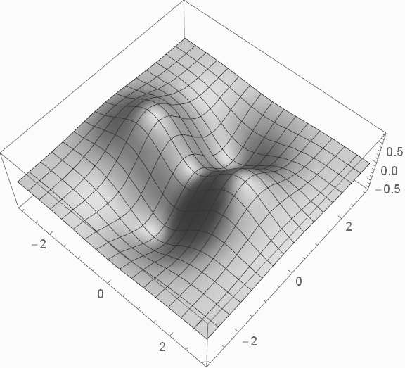
From notes W4 (L18): a saddle surface — stationary (both slices flat) yet rising along one diagonal direction and falling along the other. Critical \(\ne\) extremum.
Exam trap: "critical" includes points where a partial DNE (cones, \(|x|+|y|\)). Necessary \(\ne\) sufficient — every candidate must face the second-derivative test.
4.3 Sufficient test: the \(rt-s^2\) discriminant
Theorem (second-derivative test). Let \((a,b)\) be critical with continuous second partials nearby. Set \(r=f_{xx}\), \(s=f_{xy}\), \(t=f_{yy}\) at \((a,b)\), \(D=rt-s^2\). If \(D \gt 0\) and \(r \lt 0\): local maximum; if \(D \gt 0\) and \(r \gt 0\): local minimum; if \(D \lt 0\): saddle point; if \(D=0\): test fails, investigate directly.
Intuition. \(D\) is the determinant of the Hessian; \(D \gt 0\) means both eigendirections curve the same way (bowl: sign of \(r\) picks up/down), \(D \lt 0\) means they disagree (pass). \(D=0\) means the quadratic term is blind — higher orders decide. Derivation. Taylor: \(\Delta f=\tfrac12(rh^2+2shk+tk^2)+\text{higher}\). Complete the square: \(rh^2+2shk+tk^2=\frac{(rh+sk)^2+(rt-s^2)k^2}{r}\) — sign is locked when \(D\ne 0\).
Worked-example skeleton. \(f=x^3-6x^2-8y^2\): critical \((0,0)\) (\(D=rt-s^2=192 \gt 0,\ r=-12\Rightarrow\max\)), \((4,0)\) (\(D=-192\Rightarrow\) saddle). \(x^3+y^3-3x-12y+20\): classify all four \((\pm1,\pm2)\).
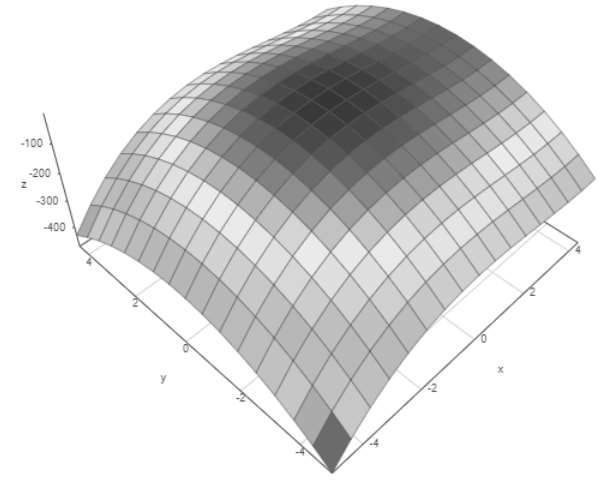
From notes W4 (L18 example): surface of \(f=x^3-6x^2-8y^2\) near \((0,0)\) — a dome (local max, \(D=192\gt 0\), \(r=-12\)); the second critical point \((4,0)\) is the saddle.
Exam trap: \(D=0\) is NOT "saddle" — test \(x^4+y^4\) (min), \(-x^4-y^4\) (max), \(x^4-y^4\) (saddle) directly. Also confirm the point is critical first.
4.4 Global extrema and Lagrange multipliers
Theorem (global, closed-bounded). A continuous \(f\) on a closed bounded domain attains global max/min, occurring only at: (i) interior critical points, or (ii) boundary points (parametrize the boundary, reduce to 1-var). Theorem (Lagrange). For \(\max/\min\) \(u=f(x,y)\) subject to \(\phi(x,y)=0\) (with \(\nabla\phi\ne 0\) on the constraint): form \(F(x,y,\lambda)=f+\lambda\phi\); solve \(F_x=0\) (\(f_x+\lambda\phi_x=0\)), \(F_y=0\), \(F_\lambda=0\) (\(\phi=0\)).
Intuition. Closed+bounded traps the function (extreme value theorem) — check inside, then walk the fence. On a constraint curve, at an extremum the level curves of \(f\) kiss the constraint (\(\nabla f\parallel\nabla\phi\)); \(\lambda\) is the exchange rate. Derivation. On \(\phi=0\), \(d\phi=\phi_xdx+\phi_ydy=0\); extremum needs \(df=f_xdx+f_ydy=0\) too — two linear forms vanishing on the same direction forces \((f_x,f_y)=\!-\lambda(\phi_x,\phi_y)\).
Worked-example skeleton. Max/min of \(x^2-y^2-2x\) on a disc: interior critical + circle parametrization \(x=r\cos\theta\). Constrained \(f(x,y)\) on \(x^2+y^2=1\): Lagrange system, compare \(f\) at the (few) solutions — Lagrange gives candidates, comparison picks the winner.
Exam trap: Lagrange needs \(\nabla\phi\ne 0\) (smooth constraint, no cusps) and only yields CANDIDATES — evaluate \(f\) to declare max vs min. Never forget the boundary in global problems.
Part B — Ordinary differential equations (Weeks 5–6)
5. First-order, first-degree ODEs
A differential equation is a machine that prints curves: feed it a slope rule, it returns a family. The order tells you how many constants the family hides; each method below is one way of coaxing them out.
Rules. Order = order of highest derivative; degree = power of highest derivative when polynomial in derivatives. An \(n\)-parameter family \(f(x,y,c_1,\dots,c_n)=0\) differentiates \(n\) times and eliminates constants to give an order-\(n\) ODE; an \(n\)th-order general solution carries \(n\) constants. Theorem (existence–uniqueness, first-order IVP). For \(\frac{dy}{dx}=F(x,y)\), \(y(x_0)=y_0\) on rectangle \(R\ni(x_0,y_0)\): (i) \(F\) continuous on \(R\) \(\Rightarrow\) at least one solution near \(x_0\); (ii) additionally \(\partial F/\partial y\) continuous on \(R\) \(\Rightarrow\) the solution is unique near \(x_0\).
Intuition. Each integration constant is one degree of freedom; eliminating \(n\) constants needs \(n\) differentiations. Uniqueness needs the slope field to vary smoothly in \(y\) — a kink in \(y\) lets solutions branch. Worked-example skeleton. \(xy=ae^x+be^{-x}+x^2\): differentiate twice, eliminate \(a,b\) \(\to\) second-order ODE. \(dy/dx=2y/x\), \(y(x_0)=y_0\): \(F,\partial F/\partial y\) continuous iff \(x_0\ne 0\) — unique solution \(y=Cx^2\) there; all parabolas pass through \((0,0)\) (non-uniqueness), none through \((0,y_0\ne 0)\).
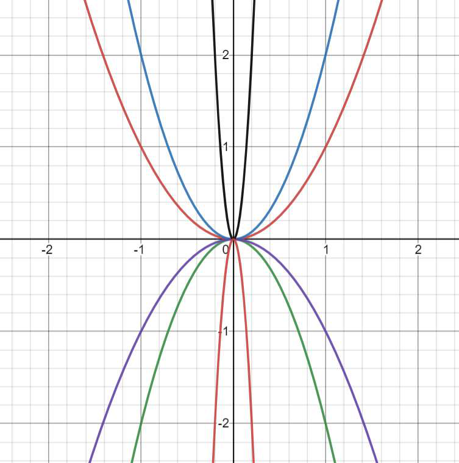
From notes W5 (L21): solution fan \(y=Cx^2\) of \(dy/dx=2y/x\) — every parabola threads \((0,0)\) (uniqueness fails on \(x=0\) where \(F\) and \(\partial F/\partial y\) blow up); no solution passes through \((0,y_0\ne 0)\).
\[\text{General solution of order }n \iff n\text{ constants.}\quad F,\ F_y\ \text{continuous}\ \Rightarrow\ \text{unique local solution.}\]
Methods. (i) Separable: \(f_1(y)\frac{dy}{dx}=f_2(x)\Rightarrow \int f_1dy=\int f_2dx\). (ii) Reducible: \(\frac{dy}{dx}=f(ax+by+c)\), \(b\ne 0\): put \(v=ax+by+c\), \(\frac{dv}{dx}=a+bf(v)\) (separable). (iii) Homogeneous: \(\frac{dy}{dx}=f(y/x)\) or \(Mdx+Ndy=0\) with \(M,N\) same-degree homogeneous: put \(y=vx\), \(\frac{dy}{dx}=v+x\frac{dv}{dx}\) (separable). (iv) Reducible-to-homogeneous: \(\frac{dy}{dx}=\frac{a_1x+b_1y+c_1}{a_2x+b_2y+c_2}\) with \(a_1b_2-a_2b_1\ne 0\): shift \(x=X+h\), \(y=Y+k\) with \(a_ih+b_ik+c_i=0\) to kill constants, then \(Y=vX\). If \(a_1b_2-a_2b_1=0\) the numerator is a multiple of the denominator's linear part — use type (ii).
Intuition. All four are the same trick: a substitution that makes the equation split into "\(x\)-stuff = \(y\)-stuff". The \(h,k\) shift moves the intersection of the two lines to the origin so scaling symmetry appears. Derivation. For \(y=vx\): \(\frac{dy}{dx}=v+xv'=f(v)\Rightarrow \frac{dv}{f(v)-v}=\frac{dx}{x}\). For the shift: choosing \(h,k\) to annihilate both constant terms leaves a homogeneous equation in \((X,Y)\).
\[v=\frac yx:\ \frac{dv}{f(v)-v}=\frac{dx}{x};\qquad x=X+h,\ y=Y+k\ \text{kills }c_1,c_2\text{ when }a_1b_2-a_2b_1\ne0.\]
Worked-example skeleton. \(\frac{dy}{dx}=e^{x-2y}+x^2e^{-2y}\): \(e^{2y}dy=(e^x+x^2)dx\). \(\frac{dy}{dx}=\frac{x+2y-3}{2x+y-3}\): shift by \((h,k)=(1,1)\), then \(Y=vX\).
Exam trap: compute the determinant \(a_1b_2-a_2b_1\) FIRST — zero determinant means \(ax+by+c\) substitution, nonzero means shift. Dividing by \(f(v)-v\) can lose the singular solution \(f(v)=v\).
5.3 Exact equations
Theorem (exactness). \(Mdx+Ndy=0\) is exact (i.e.\ \(=df\) for some \(f\)) iff \(\frac{\partial M}{\partial y}=\frac{\partial N}{\partial x}\) (on a simply connected domain with continuous partials). Solution: \(f=c\) via \(\int M\,dx+\int(\text{terms of }N\text{ free of }x)\,dy=c\).
Intuition. Exactness asks whether \((M,N)\) is a gradient field; equality of mixed partials (\(f_{xy}=f_{yx}\)) is both the lock and the key. Derivation. Necessity: \(M=f_x\), \(N=f_y\) gives \(M_y=f_{xy}=f_{yx}=N_x\). Sufficiency: \(g=\int Mdx\) gives \(g_x=M\); then \((N-g_y)_x=N_x-g_{yx}=N_x-M_y=0\), so \(N-g_y=h(y)\) integrates in \(y\) alone; \(f=g+\int h\,dy\) works.
\[\frac{\partial M}{\partial y}=\frac{\partial N}{\partial x}\iff\text{exact};\qquad \int M\,dx+\int(\text{\(N\)-terms without }x)\,dy=c.\]
Worked-example skeleton. \((x^2-4xy-2y^2)dx+(y^2-4xy-2x^2)dy=0\): \(M_y=N_x=-4x-4y\) exact \(\to\) \(\frac{x^3}{3}-2x^2y-2xy^2+\frac{y^3}{3}=c\). \((3xy+y^2)dx+(x^2+xy)dy=0\): \(M_y=3x+2y\ne 2x+y=N_x\) — not exact, need §5.4. Parameter fit: \(4xe^y+3y^2\) with \((3x^2+ke^y)dx\): exactness forces \(k=4\).
Exam trap: test \(M_y=N_x\) before integrating — and the shortcut integral drops \(x\)-containing \(N\)-terms (they already came from \(M\)). A parameter \(k\) is fixed by equating the two mixed partials.
5.4 Integrating factors
Rules. Non-exact \(Mdx+Ndy=0\) may become exact after a multiplier \(I\). Usable cases: (a) \(\frac{M_y-N_x}{N}=f(x)\) only \(\Rightarrow I=e^{\int fdx}\); (b) \(\frac{N_x-M_y}{M}=g(y)\) only \(\Rightarrow I=e^{\int gdy}\); (c) homogeneous with \(Mx+Ny\ne 0\Rightarrow I=\frac{1}{Mx+Ny}\); (d) by inspection: \(d(xy)=ydx+xdy\), \(d(y/x)=(xdy-ydx)/x^2\), \(d(\tan^{-1}y/x)=(xdy-ydx)/(x^2+y^2)\), \(d(\ln xy)=(ydx+xdy)/xy\).
Intuition. The multiplier re-weights the equation until the two mixed partials agree; cases (a)–(b) are when the "disagreement" depends on one variable only, so the re-weighting PDE collapses to an ODE. Derivation. Exactness of \(IM\,dx+IN\,dy\) needs \((IM)_y=(IN)_x\), i.e.\ \(I(M_y-N_x)=IN_x-I_xN+\cdots\); with \(I=I(x)\) this is \(\frac{I'}{I}=\frac{M_y-N_x}{N}\), integrable iff the right side is \(x\)-only.
Worked-example skeleton. \((x^2+y^2+x)dx+xydy=0\): \(\frac{M_y-N_x}{N}=\frac{2y-y}{xy}=1/x\) \(\to\) \(I=x\) \(\to\) exact \(\to\) integrate. \(y(y^2+1)dx+x(y^2-1)dy=0\): regroup as \(y^2(ydx+xdy)+(ydx-xdy)=0\), divide by \(y^2\) (inspection IF): \(d(xy)+d(x/y)=0\).
Exam trap: verify single-variable dependence BEFORE integrating for \(I\) — a stray \(y\) in "\(f(x)\)" invalidates it. After multiplying, re-test exactness; signs in (b) flip (\(N_x-M_y\)).
5.5 Linear first-order and Bernoulli
Formulas. Linear: \(\frac{dy}{dx}+P(x)y=Q(x)\) with IF \(=e^{\int Pdx}\): \(y\cdot\mathrm{IF}=\int Q\cdot\mathrm{IF}\,dx+c\). Linear-in-\(x\) form \(\frac{dx}{dy}+P_1(y)x=Q_1(y)\) is identical with roles swapped. Reducible: \(f'(y)\frac{dy}{dx}+Pf(y)=Q\) via \(v=f(y)\). Bernoulli: \(\frac{dy}{dx}+Py=Qy^n\) (\(n\ne 0,1\)): divide by \(y^n\), put \(v=y^{1-n}\) \(\to\) linear: \(\frac{dv}{dx}+(1-n)Pv=(1-n)Q\).
Intuition. The IF is the reverse product rule: \(e^{\int P}\) turns \(y'+Py\) into \(\frac{d}{dx}(y\cdot\mathrm{IF})/\mathrm{IF}\). Bernoulli is "linear in disguise" — the power substitution flattens the nonlinearity. Derivation. \((ye^{\int P})'=e^{\int P}(y'+Py)=Qe^{\int P}\); integrate. Bernoulli: \(v=y^{1-n}\) gives \(v'=(1-n)y^{-n}y'\), and dividing the ODE by \(y^n\) yields the linear form.
Worked-example skeleton. \((1+x^2)y'+2xy=4x^2\): \(P=2x/(1+x^2)\), IF \(=1+x^2\). \((x+2y^3)dy/dx=y\): rewrite \(dx/dy-x/y=2y^2\) (linear in \(x\)), IF \(=1/y\). \(y'-y\tan x=-y^2\sec x\): \(v=1/y\), \(v'+v\tan x=\sec x\).
Exam trap: standard form FIRST (coefficient of \(y'\) must be 1 — divide!). If \(y\) appears nonlinearly inside a derivative (\(2y\,y'\)), suspect \(v=y^2\) before Bernoulli. Initial data fix \(c\) last.
First order exhausted. Higher order brings a vector space of solutions — next.
6. Higher-order linear ODEs
For linear ODEs, solutions add like vectors: one homogeneous "free motion" plus one forced "particular" response. Find the space (CF), then find one forced point (PI).
6.1 Structure, independence, Wronskian
Theorems. For \(y^{(n)}+a_1y^{(n-1)}+\cdots+a_ny=X\): general solution = CF (general homogeneous solution, \(n\) constants) + any one PI. If \(u\) solves homogeneous and \(v\) is any PI, \(u+v\) is general. \(y_1,y_2\) independent iff neither is a constant multiple of the other; \(y_1,\dots,y_n\) (differentiable) with Wronskian \(W=\det[y_i^{(j)}]\ne 0\) somewhere are independent. Then \(c_1y_1+\cdots+c_ny_n\) is the general homogeneous solution.
Intuition. Linearity: differences of solutions satisfy the homogeneous equation, so the solution set is one point plus a vector space. \(W\ne 0\) means the solutions (and their slopes, …) point in genuinely different directions. Derivation. Plug \(u+v\): operator linearity splits \(L(u+v)=L(u)+L(v)=0+X\). Superposition spans the homogeneous space when \(W\ne 0\) (unique constants fit any initial data).
Worked-example skeleton. \(\sin\alpha x,\cos\alpha x\) (\(\alpha\ne 0\)): ratio non-constant \(\to\) independent. \(2\sin^2x\) vs \(1-\cos 2x\): identical \(\to\) dependent. Given one solution \(y=x\), reduce order for the second.
Exam trap: \(W=0\) everywhere \(\ne\) dependent in general — but for solutions of a linear ODE on an interval it does imply dependence. PI carries NO constants; CF carries exactly \(n\).
6.2 Complementary function (constant coefficients)
Rule. For \(f(D)y=0\), \(D\equiv d/dx\): solve auxiliary \(f(m)=0\). Distinct real \(m_i\): \(e^{m_ix}\) each. Root \(m\) of multiplicity \(r\): \(e^{mx},xe^{mx},\dots,x^{r-1}e^{mx}\). Complex pair \(\alpha\pm i\beta\): \(e^{\alpha x}(c_1\cos\beta x+c_2\sin\beta x)\). Operators commute: \((D-\alpha)(D-\beta)=(D-\beta)(D-\alpha)\).
Intuition. Exponentials are eigenfunctions of \(D\) (\(De^{mx}=me^{mx}\)); repeated roots need \(x^k\) boosters because differentiating \(xe^{mx}\) re-feeds \(e^{mx}\). Complex pairs are real/imaginary parts of \(e^{(\alpha+i\beta)x}\). Derivation. \((D-m)x^ke^{mx}=kx^{k-1}e^{mx}\); killing requires \(k \lt \) multiplicity — hence the \(x^{r-1}\) ladder.
Exam trap: multiplicity \(r\) needs ALL powers \(1,x,\dots,x^{r-1}\) — dropping one loses a constant. Complex roots always come in conjugate pairs for real ODEs.
6.3 Particular integral via inverse \(D\)
Rules (\(y_{PI}=\frac{1}{f(D)}X\)). (i) General: \(\frac{1}{D-a}X=e^{ax}\int Xe^{-ax}dx\); factor \(f(D)\) into \((D-\alpha_i)\) and apply in turn. (ii) \(X=e^{ax}\): \(\frac{1}{f(D)}e^{ax}=\frac{e^{ax}}{f(a)}\) if \(f(a)\ne 0\); if \(a\) is a root of multiplicity \(r\): \(=\frac{x^r}{r!}e^{ax}\) (more generally \(\frac{1}{(D-a)^r}e^{ax}=\frac{x^r}{r!}e^{ax}\)). (iii) \(X=\cos ax\) or \(\sin ax\): replace \(D^2\to -a^2\): \(\frac{1}{\phi(D^2)}\cos ax=\frac{\cos ax}{\phi(-a^2)}\) if nonzero; resonance \(\frac{1}{D^2+a^2}\sin ax=-\frac{x}{2a}\cos ax\), \(\frac{1}{D^2+a^2}\cos ax=\frac{x}{2a}\sin ax\). (iv) \(X=x^m\) (polynomial): expand \(\frac{1}{f(D)}=[f(0)+F(D)]^{-1}\) in ascending powers of \(D\) up to \(D^m\) and apply (needs \(f(0)\ne 0\); else factor out \(D^k\) and integrate). (v) \(X=e^{ax}V\): \(\frac{1}{f(D)}e^{ax}V=e^{ax}\frac{1}{f(D+a)}V\) (exponential shift).
Intuition. \(1/f(D)\) is "division by differentiation": on eigenfunctions it is scalar division; resonance (\(f(a)=0\)) means the forcing rings the natural mode, so response grows with \(x^r\). The shift rule strips the exponential, leaving an easier \(V\). Derivation. \((D-a)(e^{ax}u)=e^{ax}u'\) gives (i). (ii): \((D-a)x^re^{ax}=rx^{r-1}e^{ax}\); iterate. (iii): \(D^2\cos ax=-a^2\cos ax\). (v): \(f(D)(e^{ax}u)=e^{ax}f(D+a)u\).
Exam trap: check resonance BEFORE dividing (\(f(a)=0\) needs the \(x^r\) rule — count multiplicity exactly). For polynomials expand to degree \(m\) only and mind \(f(0)=0\) (pull out \(D^{-k}\) = integrate \(k\) times).
6.4 Cauchy–Euler (and \((a+bx)\) type)
Rule. \(x^nD^n+a_1x^{n-1}D^{n-1}+\cdots+a_ny=X\) with \(D\equiv d/dx\): put \(x=e^z\) (\(z=\ln x\)); then \(xD\equiv D_1\), \(x^2D^2\equiv D_1(D_1-1)\), \(x^3D^3\equiv D_1(D_1-1)(D_1-2)\), … with \(D_1=d/dz\) — constant-coefficient in \(z\). Same with \((a+bx)=e^z\) for \((a+bx)^n\)-type: \((a+bx)D\equiv bD_1\).
Intuition. Equidimensional terms (\(x^k\) with \(k\)th derivative) are scale-invariant; the log change turns scaling into translation, and translation-invariant operators have constant coefficients. Derivation. \(dy/dx=\frac{1}{x}dy/dz\) so \(xD=D_1\); \(x^2D^2y=xD(xDy)-xDy=D_1^2y-D_1y\). Try \(y=x^m\) for CF: indicial polynomial in \(m\).
Worked-example skeleton. \((x^2D^2-xD+2)y=x\ln x\): \(D_1(D_1-1)-D_1+2=D_1^2-2D_1+2\); CF from \(m^2-2m+2=0\) \(\to\) \(x(c_1\cos\ln x+c_2\sin\ln x)\); PI for \(X=ze^z\) via shift. \((1+x)^2y''\)-type: \((1+x)=e^z\).
Exam trap: substitute back \(z=\ln x\) at the END — leaving \(e^z,\cos z\) is an incomplete answer. \(x \lt 0\) needs \(|x|\); exam domains are usually \(x \gt 0\).
6.5 Variation of parameters
Theorem (VoP, second order). For \(y''+a_1y'+a_2y=f(x)\) (works for variable coefficients too, and any \(f\)): with CF \(y=c_1y_1+c_2y_2\), seek \(y=C_1(x)y_1+C_2(x)y_2\) with \(C_1'y_1+C_2'y_2=0\) (kills second derivatives of \(C_i\)) and \(C_1'y_1'+C_2'y_2'=f(x)\). Then \(C_1'=-\frac{y_2f}{W}\), \(C_2'=+\frac{y_1f}{W}\) (\(W=y_1y_2'-y_2y_1'\ne 0\)), integrate.
Intuition. Freeze the constants into functions but demand they vary "slowly" (first constraint) so no \(C''\) appears; the second constraint feeds the forcing exactly. Cramer's rule on the \(2\times 2\) system gives the formulas. Derivation. \(y'=C_1y_1'+C_2y_2'\) (using constraint 1); \(y''=C_1y_1''+C_2y_2''+C_1'y_1'+C_2'y_2'\); substituting kills the homogeneous parts, leaving constraint 2. Solve: determinant is \(W\).
Worked-example skeleton. Source L30: apply to constant-coefficient example (check against inverse-\(D\) answer), and to variable-coefficient with given CF \(c_1x+c_2x^{-1}\) — VoP is the only route when \(f(D)\) rules do not apply.
Exam trap: the equation must be in NORMAL form (coefficient of \(y''\) is 1) before reading off \(f(x)\). \(W=0\) means bad \(y_1,y_2\) — pick independent ones. Sign asymmetry (\(C_1'\) negative) is the classic slip.
Part C — Integral calculus (Weeks 7–9)
7. Improper integrals
An integral can misbehave at infinity or at a spike. Every test below is one question: does the bad part contribute finitely or infinitely — and you may compare against a known bad part instead of integrating directly.
7.1 Kinds and evaluation
Definitions. First kind: infinite limit(s), integrand bounded: \(\int_a^\infty f=\lim_{R\to\infty}\int_a^R f\); \(\int_{-\infty}^{\infty}f=\lim_{R_1\to\infty}\int_{-R_1}^c+\lim_{R_2\to\infty}\int_c^{R_2}\) (BOTH limits must exist independently). Second kind: unbounded at \(a\), \(b\), or interior \(c\): split at every singular point, e.g.\ \(\int_a^b=\lim_{\epsilon\to 0^+}\int_{a+\epsilon}^b\) if singular at \(a\); interior \(c\) forces \(\int_a^c+\int_c^b\). Third kind: both.
Intuition. Improper = proper pieces + limits; each singularity gets its own independent limit — letting two bad points "cancel" in one limit is the cardinal sin (the \(\int_{-1}^1dx/x^3=0\) fallacy). Worked-example skeleton. \(\int_2^\infty\frac{2x^2}{x^4-1}dx=\frac{\pi}{2}-\tan^{-1}2+\frac12\ln 3\) (partial fractions, then limits). \(\int_0^1\frac{dx}{\sqrt{1-x}}\): singular at 1, converges. \(\int_{-1}^1\frac{dx}{x^3}\): split at 0 — both halves diverge, so the whole diverges (principal value \(0\) is NOT convergence). \(\int_0^2\frac{dx}{\sqrt{2x-x^2}}=\infty\) diverges.
\[\int_a^{\infty}=\lim_{R\to\infty}\int_a^R,\qquad \int_a^b\ (\text{singular at }c)=\int_a^c+\int_c^b\ \text{independently}.\]
Exam trap: split at EVERY singular point (including interior ones) with independent limits. Symmetry cancellation across a singularity is principal value, not convergence — examiners set exactly this trap.
Intuition. Every convergence question is "which power of \(x\) (or \(x-a\)) dominates?" — the \(\mu\)-test is limit-comparison against \(1/x^\mu\) with the answer pre-computed. Worked-example skeleton. \(\int_1^\infty\frac{dx}{x\sqrt{x^2+1}}\sim\frac{1}{x^2}\): converges. \(\int_1^\infty\frac{x^2}{x^5+1}dx\sim x^{-3}\): converges. \(\int_0^\infty e^{-x^2}dx\): split at 1; tail \(\le e^{-x}\) (or \(x^2e^{-x^2}\le 1\) for large \(x\)) converges. \(\int_1^\infty\frac{\sin^2x}{x^2}dx\): \(0\le\cdot\le 1/x^2\) converges. \(\int\frac{x\tan^{-1}x}{(1+x^4)^{1/3}}\sim x^{-1/3}\tan^{-1}x\): \(\mu=1/3\le 1\) with nonzero limit \(\to\) diverges.
Exam trap: comparison needs \(f\ge 0\) — for oscillatory integrands use absolute values first (§7.3). Pick \(g\) from the DOMINANT term only; lower-order terms never decide.
7.3 Dirichlet, absolute vs conditional
Theorem (Dirichlet, Type I). If \(|\int_a^b f|\le C\) for all \(b \gt a\) (bounded partial integrals) and \(g\) decreases monotonically to \(0\), then \(\int_a^\infty fg\) converges. (Type II analogue: \(\int_{a+\epsilon}^b f\) uniformly bounded, \(g\) monotone bounded with \(g\to 0\) at \(a^+\) \(\Rightarrow\) \(\int_{a^+}fg\) converges.) Absolute: \(\int|f|\) converges \(\Rightarrow\) \(\int f\) converges. Converse false: \(\int_0^\infty\frac{\sin x}{x}dx\) converges conditionally (Dirichlet with \(f=\sin x\), \(g=1/x\)) but \(\int|\sin x|/x=\infty\) (bound below by \(\sum\int_{n\pi}^{(n+1)\pi}\) giving harmonic-type sum).
Intuition. Oscillation + decay = cancellation beats accumulation: bounded wiggles times a dying envelope sum finitely. Absolute convergence is "converges even without cancellation"; conditional is "converges only thanks to cancellation". Derivation. Dirichlet: summation/integration by parts moves the derivative onto \(g\) (integrable since monotone) while the \(f\)-antiderivative stays bounded. Non-absolute of \(\sin x/x\): \(|\sin x|/x\ge \sin^2x/x\) per hump integrates to \(\gtrsim c/n\), harmonic divergence.
Worked-example skeleton. \(\int_1^\infty\frac{\sin x}{x^p}\): Dirichlet, all \(p \gt 0\); absolute for \(p \gt 1\) via \(1/x^p\). \(\int_0^\infty\frac{\sin x}{x}e^{-x}dx\): split at 1 (near 0 the integrand \(\to 1\), proper); tail absolutely convergent.
Exam trap: \(\int_0^\infty\) with a singularity at 0 must be SPLIT (\(\int_0^1+\int_1^\infty\)) — Dirichlet covers only the tail. "Converges" without "absolutely" is conditional until proven otherwise.
Convergence technology banked. Two special functions live or die by it — next.
8. Beta/Gamma, Leibniz, double integrals
Beta and Gamma are the two improper integrals worth naming: one eats singularities at both ends, the other eats infinity — and together they evaluate half the integral table.
Intuition. Each definition wraps one §7 test integral in a convergent envelope: \((1-x)^{n-1}\) is harmless at 0, \(e^{-x}\) tames every power at \(\infty\). The parameter restrictions ARE the \(\mu\)-test conclusions. Derivation. Split \(B\) at \(c\in(0,1)\): \(\int_0^c\sim\int x^{m-1}\) converges iff \(m \gt 0\); mirror at 1. Split \(\Gamma\) at \(a\): \(\int_0^a\sim\int x^{n-1}\) iff \(n \gt 0\); tail \(\int_a^\infty e^{-x}x^{n-1}\le\int e^{-x/2}\) eventually.
Exam trap: quote the parameter ranges — \(B\) with \(m\le 0\) or \(n\le 0\) DIVERGES (no regularization in this course). \(\Gamma\) needs \(n \gt 0\) for the integral; factorials extend it later only via recurrence.
8.2 Properties and evaluation
Formula box — Beta/Gamma. Recurrence: \(\Gamma(n+1)=n\Gamma(n)\); \(\Gamma(1)=1\), \(\Gamma(n+1)=n!\) for integer \(n\ge 0\). Key value: \(\Gamma(\tfrac12)=\sqrt\pi\). Relation: \(B(m,n)=\frac{\Gamma(m)\Gamma(n)}{\Gamma(m+n)}\). Symmetry \(B(m,n)=B(n,m)\). Trigonometric form: \(B(m,n)=2\int_0^{\pi/2}\sin^{2m-1}\theta\cos^{2n-1}\theta\,d\theta\). Standard: \(\int_0^{\pi/2}\sin^p\theta\,d\theta=\frac{\sqrt\pi\,\Gamma(\frac{p+1}{2})}{2\,\Gamma(\frac p2+1)}\). Duplication/reflection as needed.
Intuition. Recurrence (integrate by parts once) reduces every integer case to \(\Gamma(1)\); the relation splits the product \(\Gamma(m)\Gamma(n)\) (a double integral over the first quadrant) via \(u=x+y\) scaling into \(B\times\Gamma\). Derivation. \(\Gamma(n+1)=[-e^{-x}x^n]_0^\infty+n\Gamma(n)=n\Gamma(n)\). \(\Gamma(\tfrac12)^2=\int_0^\infty\!\!\int_0^\infty e^{-(x+y)}(xy)^{-1/2}dxdy\stackrel{\text{polar}}{=}2\pi\int_0^\infty e^{-r^2}dr\) route, or accept via Gaussian. \(B\)–\(\Gamma\): write \(\Gamma(m)\Gamma(n)\) as iterated integral, substitute \(x=uv,\ y=u(1-v)\).
Worked-example skeleton. Source L36: \(\int_0^1 x^{p}(1-x)^{q}dx=B(p+1,q+1)\); \(\int_0^\infty e^{-x^2}dx=\tfrac12\Gamma(\tfrac12)=\sqrt\pi/2\) via \(t=x^2\); \(\int_0^{\pi/2}\sin^6\theta\,d\theta\) via \(\tfrac12B(7/2,1/2)\).
Exam trap: match exponents EXACTLY (\(x^{m-1}\) means \(m=p+1\)). The trig form needs \(2m-1,2n-1\) — off-by-one in \(m,n\) is the standard mark-loser. \(\Gamma(n+1)=n!\) only for integer \(n\).
8.3 Differentiation under the integral sign (Leibniz)
Theorem (Leibniz rule). For \(\Phi(\alpha)=\int_{u_1(\alpha)}^{u_2(\alpha)}f(x,\alpha)\,dx\) with \(f,f_\alpha\) continuous and \(u_1,u_2\) differentiable: \(\frac{d\Phi}{d\alpha}=\int_{u_1}^{u_2}\frac{\partial f}{\partial\alpha}dx+f(u_2(\alpha),\alpha)u_2'(\alpha)-f(u_1(\alpha),\alpha)u_1'(\alpha)\). Constant limits: derivative passes inside. (Improper versions need uniform convergence — not covered in this course.)
Intuition. \(\alpha\) changes the integrand everywhere (bulk term) AND moves the endpoints (boundary flux terms) — the formula is the chain rule for "integral as a function of a parameter". Derivation. \(\Delta\Phi=\int_{u_1}^{u_2}[f(x,\alpha+\Delta\alpha)-f(x,\alpha)]dx\) + two endpoint slivers \(\approx f(u_i)\Delta u_i\); divide by \(\Delta\alpha\).
Worked-example skeleton. Source L37: differentiate \(\int_0^\alpha\) or \(\int_\alpha^{\alpha^2}\)-type w.r.t.\ \(\alpha\); Feynman's trick — introduce \(\alpha\) (e.g.\ \(\int_0^1\frac{x^\alpha-1}{\ln x}dx\)), differentiate (easy integral), integrate back in \(\alpha\).
Exam trap: the two boundary terms are the most-forgotten marks in the course — variable limits ALWAYS spawn them. Check continuity of \(f_\alpha\) before swapping \(d/d\alpha\) with \(\int\).
8.4 Double integrals: definition and evaluation
Definition. \(\iint_D f\,dA=\lim_{n\to\infty}\sum f(x_j,y_j)\Delta A_j\) (exists if \(f\) continuous/piecewise continuous on \(D\)). Geometric: volume under \(z=f\) over \(D\) (area of \(D\) if \(f\equiv 1\)). Evaluation is iterated: \(\int_{x=a}^b\int_{y=g_1(x)}^{g_2(x)}f\,dy\,dx\) (hardest part: limits — SKETCH the region).
Intuition. Slice the solid into vertical sticks (\(dy\)), line the sticks into rows (\(dx\)): inner limits may depend on the outer variable, outer limits are constants. Worked-example skeleton. \(\int_0^1\int_{y}^{1}\frac{x}{x^2+y^2}dxdy\): \(x\)-first is hard (log of sum); reverse to \(\int_0^1\int_0^{x}\cdots dy\,dx\) — inner integral elementaries out.
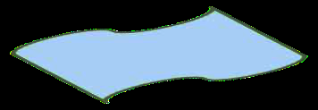
From notes W8 (L38): geometric meaning of \(\iint_D f\,dx\,dy\) — Riemann sum of sticks \(f(x_j,y_j)\Delta x\Delta y\) over \(D\); volume under the surface (area if \(f\equiv 1\)).
Exam trap: sketch FIRST — wrong limits are unrecoverable. Inner limits = functions of outer variable; outer limits = constants. If inner integral is non-elementary, that is the signal to change order.
8.5 Change of order and polar form
Method. Change of order: describe the SAME region with the other slicing (read new limits off the sketch; a region may SPLIT into pieces). Polar: \(x=r\cos\theta\), \(y=r\sin\theta\), \(dx\,dy=r\,dr\,d\theta\). Choose polar when integrand has \(x^2+y^2\) or domain is circular/sector/annulus.
Intuition. Order change is re-slicing bread the other way — the loaf (region) never moves. Polar is Cartesian in disguise for round problems; the extra \(r\) is the Jacobian (area stretcher). Derivation. Read boundary curves as functions of the new inner variable; intersection points set the split. Polar area element: \(r\,dr\,d\theta\) from the Jacobian \(|\partial(x,y)/\partial(r,\theta)|=r\).
\[\iint_D f\,dx\,dy=\iint_D f(r,\theta)\,r\,dr\,d\theta;\qquad \text{re-slice: new inner limits from the sketch.}\]
Worked-example skeleton. \(\int_0^1\int_{x^2}^{2-x}xy\,dy\,dx=\frac38\): region under \(y=2-x\), above \(y=x^2\) meets at \((1,1)\) \(\to\) reversed: \(\int_0^1\int_0^{\sqrt y}+\int_1^2\int_0^{2-y}\) (\(=1/6+5/24\)). \(\iint_R e^{x^2+y^2}\) over upper half-disc \(r\le 1\): \(\int_0^\pi\int_0^1 e^{r^2}r\,dr\,d\theta=\frac{\pi}{2}(e-1)\). Annulus \(4\le x^2+y^2\le 9\): \(\int_0^{2\pi}\int_2^3 r^3dr\,d\theta=\frac{38\pi}{3}\). Circle \(r=2\cos\theta\) (i.e.\ \((x-1)^2+y^2=1\)): \(\theta\in[-\pi/2,\pi/2]\).
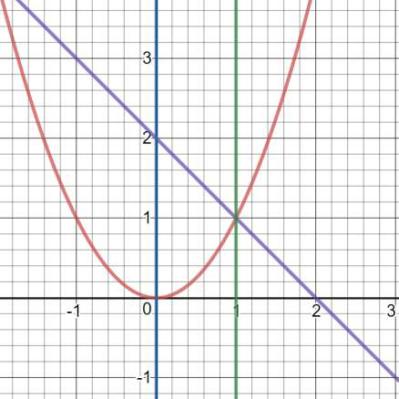
From notes W8 (L39 Problem-1): region between \(y=x^2\) and \(y=2-x\) (meeting at \((1,1)\)); reversing order splits it at \(y=1\) into \(\int_0^1\int_0^{\sqrt y}+\int_1^2\int_0^{2-y}\). Value \(3/8\).
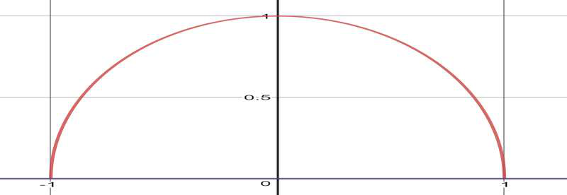
From notes W8 (L40 Problem-2): semicircular region \(x^2+y^2\le 1\), \(y\ge 0\) for \(\iint_R e^{x^2+y^2}\) — polar box \(0\le r\le 1\), \(0\le\theta\le\pi\); value \(\pi(e-1)/2\).
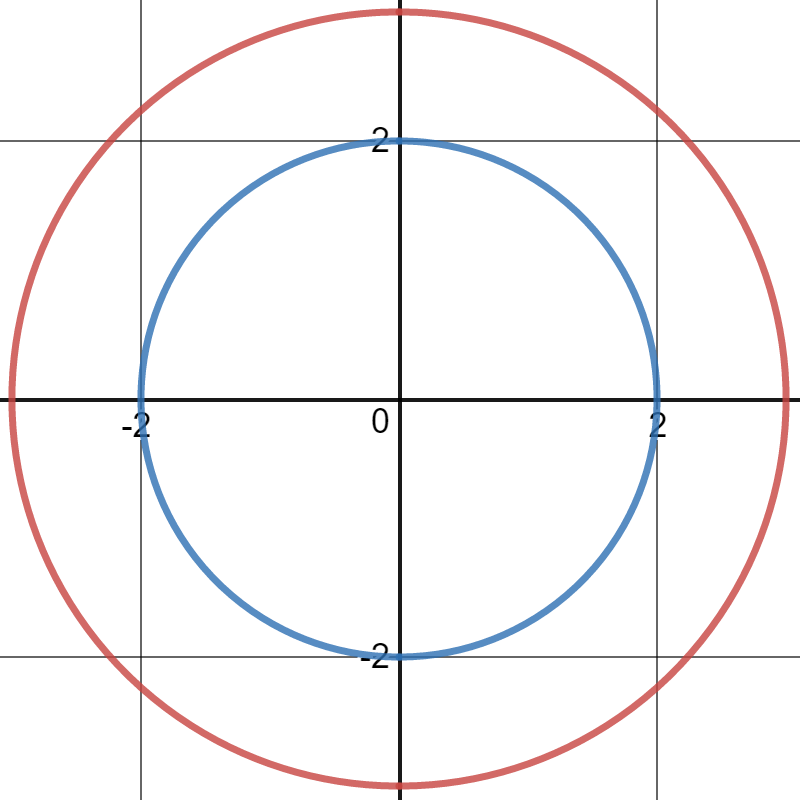
From notes W8 (L40 Problem-4): annulus between \(x^2+y^2=4\) and \(x^2+y^2=9\) — polar box \(2\le r\le 3\), \(0\le\theta\le 2\pi\); \(\iint_R(x^2+y^2)=38\pi/3\).
Exam trap: NEVER drop the Jacobian \(r\). Offset circles (\(r=2\cos\theta\)) shift the \(\theta\)-range — find where \(r=0\). Reversed order often splits one integral into two; missing the split is the classic error.
Flat regions done. Curved boundaries want new coordinates, and volumes want one more integral — next.
9. Change of variables, applications, triple integrals
Cartesian coordinates are a habit, not a law. Pick coordinates that respect the boundary, pay the Jacobian tax, and impossible integrals become routine.
9.1 Change of variables and Jacobian
Theorem. For a \(C^1\) bijective map \((x,y)=\Phi(u,v)\): \(\iint_D f(x,y)\,dx\,dy=\iint_{D^*}f(\Phi(u,v))|J|\,du\,dv\) with \(J=\frac{\partial(x,y)}{\partial(u,v)}=\begin{vmatrix}x_u&x_v\\y_u&y_v\end{vmatrix}\). Polar is the case \(|J|=r\). General and exam-favorite: \(x=u-v\), \(y=u+v\) (\(|J|=2\)) for diamond/rotated-square regions; triangular regions via linear maps.
Intuition. \(|J|\) is the local area-magnification of the map — \(du\,dv\) of parameter space paints \(|J|\,du\,dv\) of real estate. Choose \(\Phi\) so the ugly boundary becomes a rectangle. Derivation. Image of a \(du\times dv\) rectangle is a parallelogram spanned by \(\Phi_udu\), \(\Phi_vdv\) with area \(|J|\,du\,dv\); sum and take limits.
Worked-example skeleton. Source L41: \(\iint\) over triangular \((0,0),(2,1)\)-type region; \(x=u-v\), \(y=u+v\) example (\(|J|=2\)); \(xy=2\), \(y=x^2/4\), \(y=4\) region \(\to\) area \(28/3-2\ln 4\) via \(dy\,dx\) or \(dx\,dy\) whichever avoids splitting.
Exam trap: absolute value on \(J\); new limits describe \(D^*\) (image under \(\Phi^{-1}\)), NOT \(D\). Bijectivity on the region is required — folds (e.g.\ full-circle polar with \(\theta\) range \(2\pi+\)) double-count.
9.2 Area and volume by double integrals
Formula box. Area \(=\iint_D 1\,dA\). Volume under \(z=f\ge 0\) over \(D\): \(V=\iint_D f\,dA\). Between curves \(y_l(x),y_u(x)\), \(a\le x\le b\): \(\int_a^b\int_{y_l}^{y_u}dy\,dx\). Cardioid–circle, parabola–line templates below.
Worked-example skeleton (source L42, all verified). Inside cardioid \(r=2(1+\cos\theta)\), outside \(r=2\): \(\int_{-\pi/2}^{\pi/2}\int_2^{2(1+\cos\theta)}r\,dr\,d\theta=\pi+8\). Between \(y=x^2\) and \(y=x\): \(\int_0^1\int_{x^2}^{x}dy\,dx=1/6\). Between \(y=x^2\) and \(y=x+2\): \(\int_{-1}^2\int_{x^2}^{x+2}dy\,dx=9/2\). Under \(z=xy\) over \(y\in[0,3]\), \(x\in[1,\sqrt{4-y}]\)-type: \(9/4\). Base \(xy=16\), \(y=x\), \(y=0\), \(x=8\), top \(z=x\): \(256/3\). Base \(y=4-x^2\) vs \(y=3x\), top \(z=x+4\): \(625/12\).
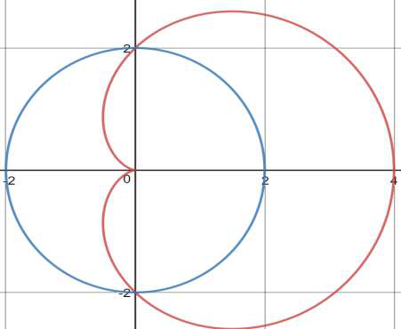
From notes W9 (L42 Problem-2): cardioid \(r=2(1+\cos\theta)\) (red, cusp at origin, reaching \(x=4\)) and circle \(r=2\) (blue) — area inside cardioid but outside circle is \(\pi+8\).
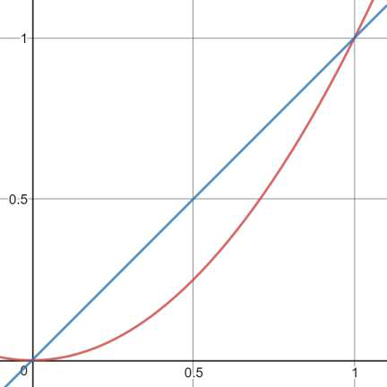
From notes W9 (L42 Problem-3): parabola \(y=x^2\) (red) and line \(y=x\) (blue) meeting at \((0,0),(1,1)\) — enclosed area \(\int_0^1\int_{x^2}^{x}=\,1/6\).
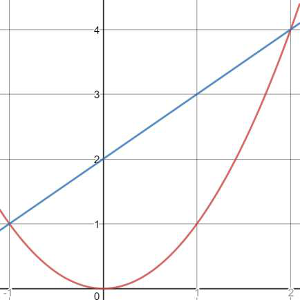
From notes W9 (L42 Problem-4): parabola \(y=x^2\) and line \(y=x+2\) meeting at \((-1,1),(2,4)\) — enclosed area \(\int_{-1}^2\int_{x^2}^{x+2}=\,9/2\).
Exam trap: intersections FIRST (they are the outer limits). "Above the line \(y=1\), below \(y=\sqrt3\,x\)" type constraints become \(\theta\)-limits (\(\pi/6\) to \(\pi/3\)) — translate geometry before integrating.
9.3 Surface area
Formula. For \(z=g(x,y)\) over \(D\): \(S=\iint_D\sqrt{1+g_x^2+g_y^2}\,dx\,dy\) (area element \(=\sec\gamma\,dA\) where \(\gamma\) is the normal's tilt from vertical).
Intuition. A tilted patch of true area \(dS\) casts shadow \(dA=dS\cos\gamma\); \(|\nabla(g-z)|=\sqrt{1+g_x^2+g_y^2}=1/\cos\gamma\) untilts it. Worked-example skeleton. Cap of hemisphere cut by a cylinder: \(2z=x^2+y^2\)-type paraboloid inside \(x^2+y^2\le a^2\) — polar after computing \(g_x,g_y\). \(z=xy\) over a disc sector — same template.
Exam trap: project onto the RIGHT plane (if surface is steep over \(xy\), parametrize over \(xz\)/\(yz\) instead). The root is \(\ge 1\) — an answer smaller than the shadow area is impossible.
9.4 Triple integrals; cylindrical and spherical
Rules. \(\iiint_V f\,dV\) iterated six ways; volume \(=\iiint_V1\). Setting limits needs the solid's projection + top/bottom surfaces. Cylindrical: \(x=r\cos\theta\), \(y=r\sin\theta\), \(z=z\), \(dV=r\,dr\,d\theta\,dz\) (axisymmetric about \(z\)). Spherical: \(x=\rho\sin\phi\cos\theta\), \(y=\rho\sin\phi\sin\theta\), \(z=\rho\cos\phi\), \(dV=\rho^2\sin\phi\,d\rho\,d\phi\,d\theta\) (\(\phi\) from \(+z\)-axis). Order \(dx\,dz\,dy\) etc.\ chosen so inner limits are surfaces, outer are constants.
Intuition. One more slicing direction; cylinders suit "round footprint + flat/round top", spheres suit balls/cones (constant-\(\phi\) is a cone, constant-\(\rho\) a sphere). The projection of the intersection curve onto \(xy\) is the footprint. Worked-example skeleton (source L44–45). Between paraboloid \(z=x^2+y^2\) and plane \(z=2y\): footprint \((x)^2+(y-1)^2\le 1\); order \(dx\,dz\,dy\): \(\int_0^2\int_{y^2}^{2y}\int_{-\sqrt{z-y^2}}^{\sqrt{z-y^2}}dx\,dz\,dy=\pi/2\) (via \(y=1+\sin t\)). Between \(z=x^2+y^2\) and \(z=1-x^2-y^2\): meet at \(r=1/\sqrt2\); cylindrical: \(4\int_0^{\pi/2}\int_0^{1/\sqrt2}\int_{r^2}^{1-r^2}r\,dz\,dr\,d\theta=\pi/4\). Sphere/cone combinations in spherical: \(\phi\)-limit from the cone's half-angle.
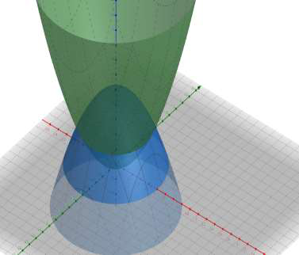
From notes W9 (L45 Problem-5): solid between the paraboloids \(z=x^2+y^2\) and \(z=1-x^2-y^2\), meeting over the disc \(r\le 1/\sqrt2\) — cylindrical evaluation gives \(V=\pi/4\).
Exam trap: limits are the whole battle — draw projection + a vertical stick (bottom/top \(z\)), then footprint. \(\phi\) is from the \(+z\)-axis (not the \(xy\)-plane); \(\sin\phi\ge 0\) on \([0,\pi]\) so no abs needed. Convert the ENTIRE integrand, not just \(dV\).
Scalars paint temperatures; vectors paint winds. The gradient walks uphill, divergence counts sources, curl measures swirl — three derivatives for a world with direction.
Definitions. \(\mathbf r(t)=x(t)\mathbf i+y(t)\mathbf j+z(t)\mathbf k\). Limit/continuity/differentiability hold iff each component has it: \(\mathbf r'(t)=x'\mathbf i+y'\mathbf j+z'\mathbf k=\lim_{\Delta t\to0}\frac{\mathbf r(t+\Delta t)-\mathbf r(t)}{\Delta t}\). Tangent line at \(P\) (with \(\mathbf r'(t_0)\ne 0\)): \(\mathbf q(\lambda)=\mathbf r(t_0)+\lambda\,\mathbf r'(t_0)\). Arc length: \(s=\int_a^b|\mathbf r'(t)|dt\). Smooth: \(\mathbf r'\) continuous and \(\ne 0\); piecewise smooth: finitely many smooth pieces. Caution: \(\mathbf r'=0\) need not mean non-smooth (reparametrization may fix it, e.g.\ \(t^3\mathbf i+t^3\mathbf j\)-type vs \(t\mathbf i+t\mathbf j\)).
Intuition. A vector function is three scalar functions marching in step; the derivative is the velocity arrow, its length the speed, its integral the odometer. Worked-example skeleton. \(\mathbf r=t\,\mathbf i+(t^2+1)\mathbf j\): \(\mathbf r'=\mathbf i+2t\mathbf j\); at \(t=2\): line \((2+\lambda)\mathbf i+(5+4\lambda)\mathbf j\). \(\mathbf r=t^2\mathbf i+t^3\mathbf j\) on \([-1,1]\): \(\mathbf r'(0)=0\), cusp at origin — non-smooth in this parametrization. Ellipse \(3\cos t\,\mathbf i-2\sin t\,\mathbf j\): smooth closed curve.
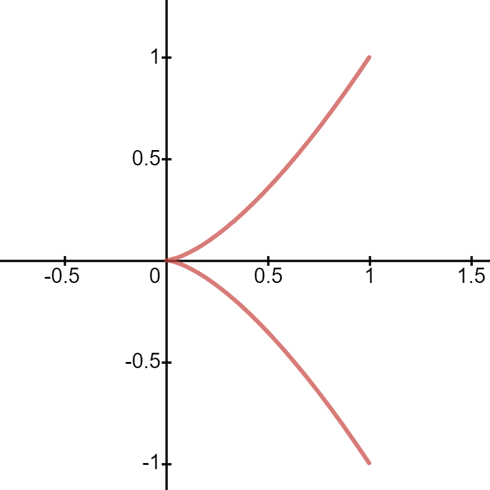
From notes W10 (L49): \(\mathbf r=t^2\mathbf i+t^3\mathbf j\) — semi-cubical cusp at the origin where \(\mathbf r'(0)=0\); the curve is not smooth in this parametrization (contrast \(t^3\mathbf i+t^3\mathbf j\), reparameterizable to smooth).
Exam trap: differentiate COMPONENTWISE; \(\mathbf r'=0\) at isolated points does not automatically mean non-smooth — look for a cusp vs a bad parametrization. Closed-curve integrals need the orientation stated.
Definitions. Scalar field: \(f(P)\) scalar (e.g.\ temperature; \(F(x,y)=2x^2+y^2\) read via level curves). Vector field: \(\mathbf F(P)\) vector (e.g.\ wind; gradient field; \(\mathbf F=y\,\mathbf i-x\,\mathbf j\) circulates on circles \(|\mathbf F|=\sqrt{x^2+y^2}\)). Gradient: \(\nabla f=f_x\mathbf i+f_y\mathbf j+f_z\mathbf k\). Directional derivative along unit \(\mathbf b\): \(D_{\mathbf b}f=\nabla f\cdot\mathbf b=|\nabla f|\cos\theta\). Max rate \(|\nabla f|\) in direction \(\nabla f\); max decrease along \(-\nabla f\); zero along level sets.
Intuition. The gradient is the compass pointing steepest uphill with magnitude equal to the steepness; any other direction gets the projection (\(\cos\theta\) discount). Level curves are contour lines; gradient pierces them perpendicularly. Derivation. Along line \(P+s\mathbf b\): \(\frac{d}{ds}f=\nabla f\cdot\mathbf b\) by chain rule; \(|\nabla f|\cos\theta\) is max at \(\theta=0\). Tangent plane to \(f(x,y,z)=c\) at \(P_0\): \(\nabla f(P_0)\cdot(x-x_0,y-y_0,z-z_0)=0\); normal line: \(P_0+\lambda\nabla f(P_0)\). Unit normal to \(x^2+y^2-z=0\) at \((1,1,2)\): \(\pm\frac{2\mathbf i+2\mathbf j-\mathbf k}{3}\).
From notes W10 (L47): level curves of the scalar field \(F(x,y)=2x^2+y^2\) — concentric ellipses; \(\nabla F\) at each point is perpendicular to its ellipse, pointing outward (steepest increase).
Worked-example skeleton. \(f=2x+y+z^2\) along \(\mathbf i+\mathbf j+3\mathbf k\): normalize first, then dot. \(f=x^2+y^2-2z\) at \((2,1,-1)\): max-increase direction \(= \nabla f=(4,2,-2)\), rate \(=\sqrt{24}\).
Exam trap: \(\mathbf b\) MUST be unit — normalize before dotting. Gradient needs all partials at the point; tangent plane uses \(\nabla f\) of \(F(x,y,z)=g(x,y)-z\) form for graphs \(z=g(x,y)\).
Intuition. Shrink-wrap a point in a tiny box: net outflow per volume is divergence (count sources minus sinks). Drop a paddlewheel in the flow: its spin axis and speed are curl. The box-face computation (\(\partial v_1/\partial x\,\delta V\) per pair) turns geometry into the formula. Derivation. Flux through faces \(x\pm\delta x/2\): \([v_1(x+\delta x/2)-v_1(x-\delta x/2)]\delta y\delta z\approx\frac{\partial v_1}{\partial x}\delta V\); sum three pairs, divide by \(\delta V\).
From notes W10 (L48): the small volume \(\delta V\) with outward normal — divergence at \(P\) is the limit of outward flux per unit volume through \(\delta S\).
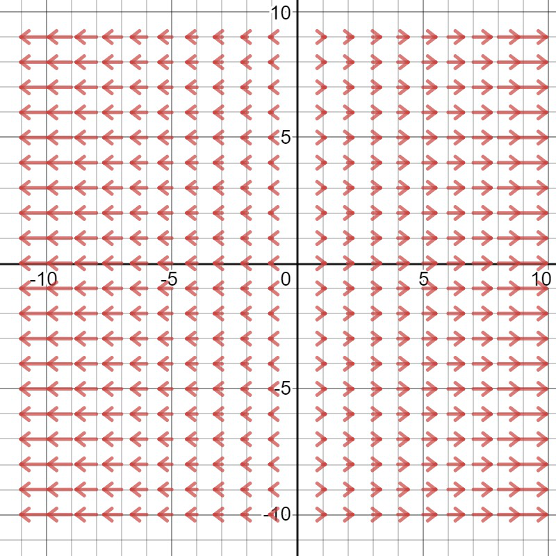
From notes W10 (L48): \(\mathbf v=(x,0,0)\) — arrows grow away from the \(y\)-axis: \(\operatorname{div}\mathbf v=1\gt 0\), pure expansion (source-like).
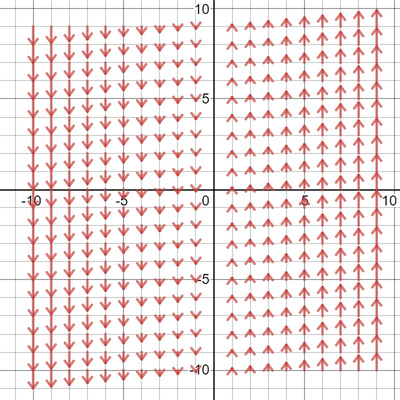
From notes W10 (L48): \(\mathbf v=(0,x,0)\) — shear flow, \(\operatorname{div}\mathbf v=0\): solenoidal (incompressible), neither expanding nor contracting. Contrast \((x,0,0)\) expansion and \((-x,0,0)\) compression (\(\operatorname{div}=-1\)).
Worked-example skeleton. \(\mathbf v=(x,0,0)\): div \(=1\) (expansion); \((-x,0,0)\): div \(=-1\) (compression); \((0,x,0)\): div \(=0\) solenoidal. \(\mathbf v=\pm(x,0,0)\): curl \(=0\) irrotational (no rotation sense). \(\mathbf v=(bz-cy,cx-az,ay-bx)\): curl \(=2(a,b,c)\). Componentwise computation for \(\mathbf v=(x^2y^3-z^3,\ 2xyz,\ \ldots)\)-type.
Exam trap: div eats a vector and returns a SCALAR; curl returns a VECTOR — dimension errors are instant fails. Solenoidal (\(\operatorname{div}=0\)) \(\ne\) irrotational (\(\operatorname{curl}=0\)); test each separately.
Local rates in hand. Now integrate fields along curves and over surfaces — next.
11. Line integrals, conservative fields, Green, surfaces, flux
Work is force along a path; circulation is wind around a loop; flux is wind through a net. Conservative fields are the honest ones — path never matters, only endpoints.
11.1 Line integrals and circulation
Formulas. For \(\mathbf F\) continuous on smooth \(\mathbf r(t)\), \(a\le t\le b\): \(\int_C\mathbf F\cdot d\mathbf r=\int_a^b\mathbf F(\mathbf r(t))\cdot\mathbf r'(t)dt\) \(= \int_C(F_1dx+F_2dy+F_3dz)\); work form \(\int_C\mathbf F\cdot\mathbf T\,ds\). Closed \(C\): circulation \(\oint_C\mathbf F\cdot d\mathbf r\). Orientation matters (sign flips on reversal).
Intuition. Chop the curve, dot force with each tangent step, add — parametrization converts it to a single-variable integral. A loop integral measures net push around the circuit. Worked-example skeleton. \(\mathbf F=(y-x^2,\,z-y^2,\,x-z^2)\) on \(\mathbf r=(t,t^2,t^3)\), \(0\) to \(1\): substitute and integrate in \(t\). Rectangle/circle loops: parametrize each piece (circle: \(3\cos t,3\sin t\)), watch orientation. Path-dependence demo: two paths \((0,0)\to(1,1)\) (parabola \(y=x^2\) vs broken line) giving different values for non-conservative \(\mathbf F\).
Exam trap: substitute the FULL parametrization (both \(\mathbf F\) and \(d\mathbf r\)) — integrating \(\mathbf F\) with \(dt\) while forgetting \(\mathbf r'\) is the classic zero. Piecewise curves split the integral; closed loops need consistent (all-CCW or all-CW) orientation.
Theorems. \(\mathbf V\) conservative iff \(\mathbf V=\nabla f\) for some potential \(f\). Test: on a simply connected domain with \(C^1\) components, \(\nabla\times\mathbf F=\mathbf 0\iff\) conservative. Equivalent (simply connected): (1) \(\oint_C\mathbf F\cdot d\mathbf r=0\) for all closed \(C\); (2) path independence; (3) \(\mathbf F=\nabla f\). Then \(\int_A^B\mathbf F\cdot d\mathbf r=f(B)-f(A)\) (fundamental theorem for line integrals). Simply connected = one piece + every simple closed curve shrinkable (no holes).
Intuition. Zero curl means no local whirlpools, and with no holes to trap circulation, every loop integral dies — so the integral only remembers endpoints, defining \(f(P)=\int_{P_0}^P\). Derivation. Conservative \(\Rightarrow\) curl zero by equality of mixed partials (\(P_y=Q_x\) etc.). Conversely define \(f\) by path integrals (well-defined by path independence \(\Leftarrow\) zero loop integrals \(\Leftarrow\) Stokes/Green on shrinkable loops); \(df=\mathbf F\cdot d\mathbf r\) gives \(\nabla f=\mathbf F\). Finding \(f\): integrate \(f_x=F_1\) in \(x\) (+ \(h(y,z)\)), match \(f_y,f_z\).
Worked-example skeleton. \(\mathbf F=(2x+y,\,x,\,2z)\): curl \(=0\) \(\to\) \(f=x^2+xy+z^2+c\) (integrate \(f_z=2z\), then match). \(\mathbf F=(e^x\cos y+yz,\,xz-e^x\sin y,\,xy+z)\): check \(P_y=Q_x\), \(P_z=R_x\), \(Q_z=R_y\) \(\to\) conservative \(\to\) build \(f\). Hole warning: \(\frac{-y\mathbf i+x\mathbf j}{x^2+y^2}\) has zero curl but nonzero circulation — domain not simply connected.
Exam trap: curl \(=0\) concludes conservativeness ONLY on simply connected domains — punctured-plane fields are the exam counterexample. When building \(f\), the "constant" of \(x\)-integration is a function \(h(y,z)\); match all three components.
11.3 Green's theorem
Theorem (Green). Let \(R\subset\mathbb R^2\) have piecewise-smooth simple closed CCW boundary \(C\) (region always left), \(\mathbf F=(F_1,F_2)\) \(C^1\) on \(R\cup C\). Then \(\oint_C\mathbf F\cdot d\mathbf r=\oint_C(F_1dx+F_2dy)=\iint_R\left(\frac{\partial F_2}{\partial x}-\frac{\partial F_1}{\partial y}\right)dA=\iint_R(\operatorname{curl}\mathbf F\cdot\mathbf k)\,dA\). Corollary: area \(=\oint_C x\,dy=-\oint_C y\,dx=\tfrac12\oint_C(x\,dy-y\,dx)\).
Intuition. Microscopic circulation \((\partial_xF_2-\partial_yF_1)dA\) in each cell telescopes: interior edges cancel, only the boundary survives — the loop integral is the sum of all tiny spins. Derivation (source proof). For \(y\)-simple \(R\) (\(g_1\le y\le g_2\)): \(\iint_R\partial_yF_1=\int_a^b[F_1(x,g_2)-F_1(x,g_1)]dx=-\oint_CF_1dx\) (top curve runs backward). Similarly \(\oint_CF_2dy=\iint_R\partial_xF_2\). Add. General regions: subdivide.
Worked-example skeleton. Source L51 Problems 1–5: verify Green on a rectangle for a polynomial field (both sides); evaluate \(\oint\) over triangle/circle via the double integral (easier); area of ellipse/loop via \(\tfrac12\oint(xdy-ydx)\); regions with holes: outer CCW + inner CW.
Exam trap: CCW positive — CW flips the sign. Partial derivatives are CROSSED (\(\partial_xF_2-\partial_yF_1\)); uncrossed is wrong. Hypotheses (\(C^1\) up to boundary, simple closed \(C\)) must hold — singularities inside need excision (hole handling).
11.4 Surfaces: parametric, orientable, flux
Formulas. Parametric \(\mathbf R(u,v)\): smooth if \(\mathbf R_u\times\mathbf R_v\ne 0\); area \(=\iint|\mathbf R_u\times\mathbf R_v|\,du\,dv\). Graph \(z=g\): \(|\mathbf R_x\times\mathbf R_y|=\sqrt{1+g_x^2+g_y^2}\) (cf.\ §9.3). Scalar surface integral: \(\iint_S f\,d\sigma\). Flux (vector): \(\iint_S\mathbf F\cdot\mathbf n\,d\sigma\) with continuous unit normal \(\mathbf n\) — needs ORIENTABLE \(S\) (two paintable sides). Non-orientable: Möbius strip (one side). Sphere: smooth closed orientable (outward normal standard).
Intuition. \(\mathbf R_u,\mathbf R_v\) span the tangent parallelogram; its area is the surface element. Flux counts field piercing the skin — without two distinct sides, "outward" is meaningless. Worked-example skeleton. Cap cut from hemisphere \(x^2+y^2+z^2=a^2\) by a cylinder: project to \(xy\), polar. Flux of \(\mathbf F=yz\,\mathbf j+z^2\mathbf k\) through a paraboloid patch: \(\mathbf n\,d\sigma=\pm(-g_x,-g_y,1)dxdy\) (sign by orientation). Sphere/cone patches in spherical coordinates.
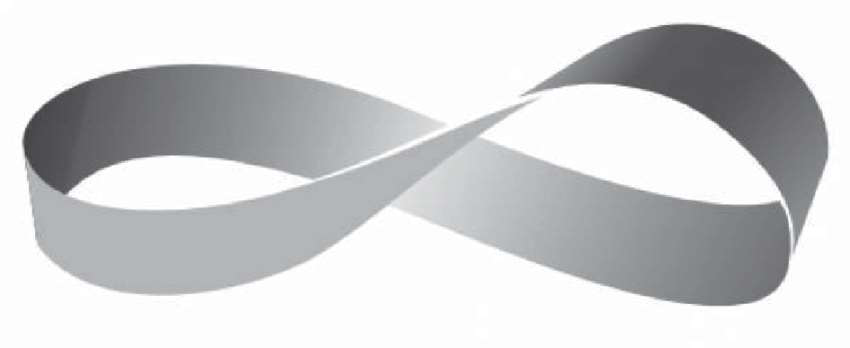
From notes W11 (L53): Möbius strip — non-orientable (one side only): no continuous unit normal exists, so flux integrals are undefined on it.
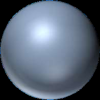
From notes W11 (L52/53): sphere — smooth, closed, orientable: outward unit normal well-defined everywhere; the model closed surface for flux and the divergence theorem.
Exam trap: orientation sign (\(\pm(-g_x,-g_y,1)\)) must match "outward/upward" as asked — half the flux marks live here. Closed \(S\) \(\ne\) orientable automatically (Möbius with boundary glued is the counterexample family).
Boundaries and surfaces understood. The two master theorems equating them — next.
Green's theorem grew up: Stokes lets the loop float in 3D, Divergence trades the skin for the whole body. Week 12 then turns the machinery back on moving particles and on the operators themselves.
12.1 Stokes' theorem
Theorem (Stokes; Green generalized). For oriented surface \(S\) with consistently oriented closed boundary \(C\) (right-hand rule: fingers along \(C\), thumb along \(\mathbf n\)), \(\mathbf F\) \(C^1\): \(\oint_C\mathbf F\cdot d\mathbf r=\iint_S(\nabla\times\mathbf F)\cdot\mathbf n\,d\sigma\). Surface can be ANY spanning surface (choose the easiest: a disc beats a paraboloid).
Intuition. Same telescoping as Green, but the cells tile a curved surface in space — the loop only cares about total swirl through any film spanning it (soap-film freedom). Worked-example skeleton. Source L54 Problems 1–2: \(\oint_C\mathbf F\cdot d\mathbf r\) around a circle bounding a paraboloid cap \(\to\) compute \(\iint_{\text{disc}}(\operatorname{curl}\mathbf F)\cdot\mathbf k\) instead (project to \(xy\)). Cone \(z=\sqrt{x^2+y^2}\) case with \(\mathbf F=-y\,\mathbf i+x\,\mathbf j-xyz\,\mathbf k\): curl dotted with cone normal.
Exam trap: orientation by RIGHT-HAND rule (wrong thumb = sign error). \(\mathbf n\,d\sigma\) must be computed for the surface you actually integrate — but you may SWAP to any spanning surface with the same \(C\).
12.2 Divergence (Gauss–Ostrogradsky) theorem
Theorem. For closed oriented \(S\) (outward \(\mathbf n\)) enclosing volume \(M\), \(\mathbf F\) \(C^1\): \(\oiint_S\mathbf F\cdot\mathbf n\,d\sigma=\iiint_M(\nabla\cdot\mathbf F)\,dV\). Net outflow = sum of sources minus sinks inside.
Intuition. Add up §10.3's tiny boxes over \(M\): every interior face cancels with its neighbor, leaving only the skin — volume sources manifest as skin flux. Worked-example skeleton (source L55 Problems 1–5). Flux through cube/sphere for polynomial \(\mathbf F\): divergence is polynomial \(\to\) volume integral in matching coordinates. Cone \(z=\sqrt{x^2+y^2}}\)-capped solids: spherical or cylindrical by symmetry. Verify both sides on a ball for radial \(\mathbf F\).
Exam trap: CLOSED surface required (open patch \(\to\) Stokes, not Gauss). Outward normal; singularities of \(\mathbf F\) inside \(M\) (e.g.\ \(1/r^2\) radial at origin) must be excised first. Zero divergence \(\Rightarrow\) flux depends only on boundary behavior — pick the easiest closed surface.
12.3 Applications of derivatives (L56–57): motion, radial–transverse
Exam trap: cross-product rule preserves ORDER (\(\dot{\mathbf u}\times\mathbf v+\mathbf u\times\dot{\mathbf v}\) — swapping flips sign). Transverse unit \(\mathbf v\) is \(d\mathbf u/d\theta\), not a fixed axis — it rotates with the particle.
12.4 Properties of grad/div/curl and Laplacian (L58–60)
Intuition. "Del" behaves like a vector under product rules (with \(\nabla\) acting as differential operator — it must hit something). Mixed partials commuting kills curl-of-grad and div-of-curl; curl-of-curl splits into "gradient of outflow minus Laplacian" (the vector wave-equation splitter). Derivation. \(\nabla(1/r)\): \(\partial_x(x^2+y^2+z^2)^{-1/2}=-x/r^3\), etc. \(\operatorname{div}\operatorname{curl}=0\): each term pairs \(u_{i,jk}-u_{i,kj}=0\). \(\operatorname{curl}\operatorname{curl}\) via \(\epsilon\)-identity or component expansion.
Worked-example skeleton. Source L58–60: prove div-linearity from differential-operator linearity; compute \(\nabla(1/r)\) componentwise; verify \(\operatorname{div}\operatorname{curl}\mathbf u=0\) from the determinant form; expand \(\operatorname{curl}\operatorname{curl}\) for general \((u_1,u_2,u_3)\). Harmonic \(f\) (\(\nabla^2f=0\)) shortcuts.
Exam trap: identities need \(C^2\) components (mixed partials must commute) — and at \(r=0\) the \(1/r\) formulas are singular (point charge excision, cf.\ §12.2). \(\nabla^2\mathbf u\) acts componentwise on vectors.
curl grad \(=0\), div curl \(=0\), curl curl \(=\) grad div \(-\) Laplacian; \(\nabla(1/r)=-\mathbf r/r^3\).
Built from your 12 weekly PDFs (L1–L60). Figures are embedded crops from those PDFs (calc_images/). For the exam, redraw from memory: Rolle corner, Taylor hug, saddle vs dome, solution fan, annulus/cardioid regions, vector-field spread vs shear, cusp, Möbius vs sphere.